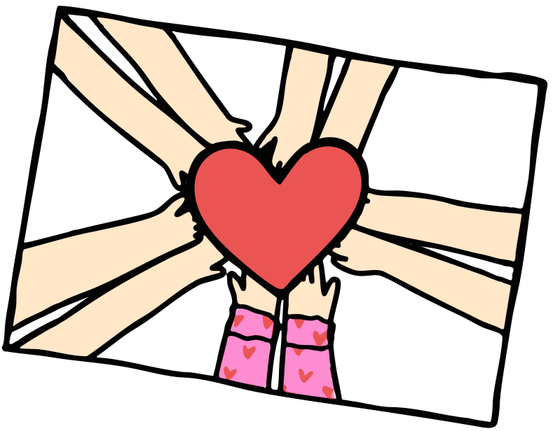
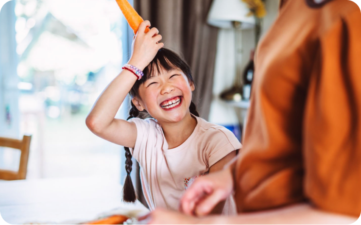
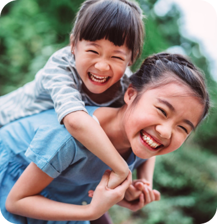

our services

你現在閱讀的並不是真的文案這些文字，只顯示文案將會擺放的位置我們會稱呼案這些文顯示文案會稱呼這些文案為假字。你現在閱讀的並不是真的文案這些文字。你現在閱讀的並不是真的文案這些文字，只顯示文案將會擺放的案這些文顯案為假字。
你現在閱讀的並不是真的文案這些文字，只顯示文案將會擺放的位置我們會稱呼案這些文顯示文案會稱呼這些文案為假字。你現在閱讀的並不是真的文案這些文字。你現在閱讀的並不是真的文案這。你現在閱讀的並不是真的文案這些文字，只顯示文案將會擺放的位置我們會稱呼案這些文顯示文案會稱呼這些文案為假字。
你現在閱讀的並不是真的文案這些文字。你現在閱讀的並不是真的文案這你現在閱讀的並不是真閱讀的並不是真的文案這你現在的文案。
兒童之家照顧服務
本會之兒童之家服務，主要由香港特區政府社會福利署(下稱社署)整筆過撥款津助、香港公益金，及各善心人士捐助支持營運。

提倡社區關懷意識，致力為兒童提供住宿照顧服務，並按其需要提供適切支援，以助融入社會。同時，推動義工的參與，並由專業人士協助，令服務更臻完善。
服務目標為其家庭暫時無法提供適當照顧而又未能作出其他較佳居住安排之兒童，提供家庭模式住宿及日常起居生活的照顧服務，直至他們可以與家人團聚或被安排到可作長期居住的地方。
服務對象．四至十八歲之兒童，並須為日校學生。
．為有特殊需要之在舍兒童或其照顧者，提供臨床心理服務及/或由社工負責之主題性小組/活動。
服務內容
住宿照顧
由一對夫婦及其他家舍職員參與照顧兒童，採用家庭模式管理方法，讓兒童在接近一般正常家庭的環境及氣氛下生活。
日常起居照顧
入住兒童之家的兒童，其生活與一般兒童無異。透過安排，他們會接受正常學校教育，亦須分擔一般家務。每位兒童之健康、學業、社交、情緒及行為等問題均會獲得適當之照顧。
輔導及福利計劃
兒童之家社工及家舍家長均會為個別兒童提供輔導及指導服務，並參與制定其福利計劃，定期檢討每位兒童的留住需要。同時，為個別有特殊需要兒童安排臨床心理服務及/或由社工負責之主題性小組/活動，以提供適切支援。
社交及康樂活動
為幫助發展兒童的潛能，兒童之家亦會為兒童安排各類有益身心之活動。包括上圖書館︑參觀各類博物館及展覽館、學習操作電腦、文化藝術節目欣賞、郊遊、燒烤、游泳、球類活動、宿營、聯歡會、生日會等。
單位年度計劃
每年度由4月開始推行「單位年度計劃」，以主題形式就服務發展、職員發展及主題活動等範疇推行有關之活動。
服務人員
每所兒童之家均有一位註冊社工，一對正家長，一位代家長，及一位工友，為入住兒童提供合的照顧。
服務時間
本會兒童之家提供廿四小時照顧服務。
服務費用
兒童在兒童之家內之住宿及膳食費用全免，惟其家長或監護人須負擔兒童個人的一切雜項開支。
申請及退出手續

有意申請兒童之家服務者，可向社會福利署或各非政府機構有關家庭、兒童及青少年之福利服務單位查詢。
所有申請必須經兒童住宿照顧服務中央轉介系統辦理。本會收到轉介申請後，將透過轉介社工約見兒童及其監護人/家屬。
本會初步接納申請後，兒童之監護人/家屬須自行替該兒童安排體格及健康檢查，所有費用亦須自行支付。
兒童之監護人/家屬亦須安排該兒童就讀於兒童之家所在區域內或經商討後作特別安排之學校。

你現在閱讀的並不是真的文案這些文字，只顯示文案將會擺放的位置我們會稱呼這些文案為假字。

你現在閱讀的並不是真的文案這些文字，只顯示文案將會擺放的位置我們會稱呼這些文案為假字。

服務單位
本會現時共設有五所兒童之家：
懷愛夢騎行
你現在閱讀的並不是真的文案這些文字，只顯示文案將會擺放的位置我們會稱呼案這些文顯示文案會稱呼這些文案為假字。你現在閱讀的並不是真的文案這些文字。